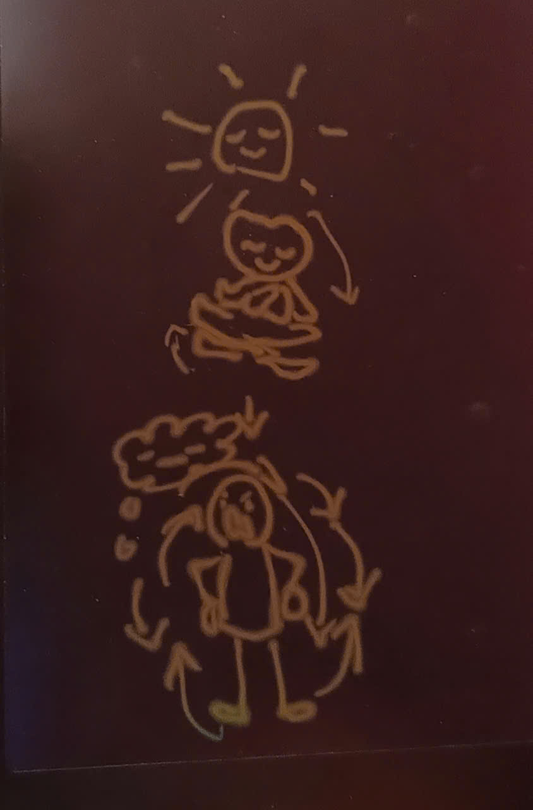

Darling when I want to write to you, actually I need to write for me,
It seems like my heart put the pen in my hand and make me to write,
It want me to understand it to get more closer to it by writing to you
I hope you can be patient with me
This is how and what I woud live 2026,
I am walking the path of truth to non-self,
one said the earth is like a big tear wandering in the universe,
carry 3/4 of salty tear water
there must be an answer to all the happenings, incidents

But beings just often leave questions unanswered
it is said that things will get better,
but it has been hurting for thoudsands, before thoudsands were thoudsand years too
In 2025, the year of number 9, the mature number
I had the chance to reflect, to fully observed all the seeds I’ve planted and/or collected
1 up, 2 downs, 3 aheads, 4 backs, 5 success, 6 in vain, 7 left, 8 tears, 9 realize…
around my mind.
I had the chance to step back, to stay still to see all the seeds (all the states of my mind)
For the first time, I see the seeds of my mind are not me, even me isn’t me either
I wanna decide my life, not those seeds in mind can pull and lead me anymore
I simply desire to go over the expectations, standards society set up
Yet at that time had no clue how I can reach that stillness, see it, be it in real
I felt like i were a mess of arguing voices, thoughts, feelings…pulling me left-right
I was carrying questions, wondering mind, finding no pleasing answers
And the real problem is I see that in almost all being
we have conflicting thoughts, inquiries
Many times we pretend or try to forget to look for the answer, for the truth
When i can observe them in peace and stillness, I’ll begin to see their routes,
how each of them were formed, grow…
When I can see how and why something happens because right factors met,
I will be calm to face it, and I observe underlying factors,
then I react with a deep understanding
I see the collection of seeds around my heart is not my heart, is not me,
my heart is a stillness as ever as other being’s,
but I used to identify those seeds as me, i try to get on with them, pull them back to me,
to be mine, to give them all energy and time
to keep me as them “upset”, “happy”, “pretty”, “smart”, “haughty”, “fear”, “try”, “smile”…
to satisfy what society celebrates as “sucess”, “beauty”, “power”, “knowledge”, “pride”, “name”, “fame”…
The more I got on with those seeds outside of me, trying to pull them close, to keep them mine
I got slipped far away from my heart
I forget my heart of stillness is there as ever
day by day I made, I collected a mass of mess of seeds and call it as my Self, silly self-made selves
…Budda’s teachings opened my eyes, reverse my mind
His response poured cold water onto the energy of her caring seeds.
It activated her pride-protection seed, her self-made self,
and then they both moved further away from each other,
further from the stillness—the voidness—that could have embraced each of them, both of them completely.
If only the wife could continue saying, "Darling, did you like the food today?
What would you like to eat tomorrow?"
—then that loving seed would continue to emit energy,
and it would nourish the seed of trust and love on the husband’s side.
But darling,”anger” seed echos with anger, “sulking” loves “sulking” in the other.
When the wife doesn’t yet have a strong enough seed of love and understanding,
her husband’s sulking attitude activates her ego-protection seed—
this pride is not real pride, merely a silly self-made pride,
and it only pushes beings further from themselves and from each other
The seeds of caring, patience, love, wisdom—they can dissolve all other seeds:
stubbornness, anger, ignorance, arrogance, doubt…
While the seeds of anger, ignorance, doubt..—they only love more of themselves.
And I also told you that there is resonance, entanglement, layering between seeds—
they interact in very strong, deep, complex manners—
through lives, through years, through centuries that the world see them as real,
cease to question but live with them without knowing them
but if there is stillness, peace, calm care to observe them, they’ll be gone like
there is no dark when the light is on.

The story of the couple can be too easy
yet it applies the same when it comes to wars, politics, global commerce.
The interact, echo, resonance…among seeds get to a much more complicated level,
not for everybody to see and realize.
Yet still with stillness, peace inside one can see them through,
like light goes through all the false dark.
Darling, I see behind all those happenings—there are clusters of seeds,
cognitive masses in every being, interacting with each other.
They are just self-made selves, self-made prides—yet they don’t die.
Because not many beings have learned how to observe them,
detach them from themselves, stop identifying with them,
stop feeding them energy and time.
So they continue to live, resonate, echo, synchronize with each other,
becoming more powerful, more subtle, more cunning
I wrote all of this—it may sound complex
But when I write it down I can simplify my mind, free it,
detach it from these luring, powerful seeds cause I am observing them, I see them
I see the self-made selves of Qin Shi Huang, Hitler—they still persist, echo,
be inherited in Putin, in Xi, in other powerful, less powerful elites
—and also within us, within me. I accept them in me, and I stay patient.
Just recognizing this truth is already difficult.
But to be patient enough not to feed them our time and energy,
to let them go through the process of formation, dwelling, decaying, cease
—like any material seed—is even harder.
You know what, darling? Now I no longer feel upset or angry at anyone,
even when they treat me unfairly.
Because I see a whole echoing system, interacting forces behind every action,
and their true essence is not like that.
So I simply don't support the anger, the pain, and all the aggressive seeds
So I have energy and time to call on my patience, caring, and joyful seeds.
Through how many lives, I believe this is the first time I am starting to observe my mind.
To realize the truth of stillness, peace, voidness in every being.
And that stillness is ONE.
We only become separated, fight, suffer—because we cling to the messes of seeds
cling to the messes of seeds
Darling, not everyone who suffers has the chance to stay in stillness
and see through that pain to its root, to question deeply.
I see that many beings are still acting under the influence of powerful aggressive seeds within them.
When these forces, these seeds dominate the world,
I understand why this world holds so much sorrow and pain than joy
I know the reasons for the current state of the Earth
Darling since Buddha reverse my view of this world,
I walk the path each day firmly and more clear. I live quiet and simple.
2025, the mature number 9, gave me all the ingredients to reflect, to see things through
Love and care without attachment.
2026, I got the chance to live as a Buddha’s discipline,
to experience, to see, to feel the truth of lives on my body, my mind, my heart
even in yours when you let it reflect in you.
2026, number 10, a firm line, a belief guide me to the truth path of non-self.
That’s what I chose. Darling, now I no longer have questions about this world.
And I know each thing I do now, and what would come to me then.
My purpose of this lifetime is to reach the core of voidness and non-self,
To understand everything completely.
…now my will is not on purposes, my will to become voideness,
Because voidness is the only state, unlimited space that can embrace,
hold each and every seed of all beings—both material and spiritual.
When Buddha’s teachings of voideness touch the core in me,
I understand why light reach the ultimate speed, real and clear,
Not any material seed, however lighter and lighter can reach the ultimate
unless it free itself from weight.
I had no idea of what Einstein’s Relative Theory would do and help,
but when I get closer to my heart, detaching luring seeds one by one,
I got deeper to the core I see time ceases to the moment of Present,
I see Time does not exist any more.
While the whole world suffer and struggle for the future, blame things for the past
The world is not real for me as it was, yet I admit it is a hurting stage…

I love you as day one when you touch my heart on that valentine,
I love you more when our stillness met, you are my king and you are me.
Yet I dont expect you come to me, I don’t ask you to talk to me,
I appreciate if you share with me what you feel in real,
I am very happy if you be my company.
If not, if you wanna to be with some girl, I thank you always, universe’s gift for me.
We’ll close this beautiful encounter, thankful and respectful for each other.
i wanna wait for you
If you don’t be with me, I won’t look for other,
Because that connected stillness, voideness is my ultimate purpose through lives
When i would train me to become the full stillness, I’ll be with all beings
and you are in there too
And one more reason is: as I know me truly, I know each seed in me
And one more reason is: so I choose to plant the seed of loyal,
to get to the loyal eternal love, either it will be with you
or with all other beings.
I walk the path to the truth of non-self,
not because I am a being without fear or full of courage darling,
But I knew I am not that fear, nor I am the courage.
I just knew my purpose.
The purpose of this lifetime is to reach the core of voidness and non-self,
To understand everything completely.
Darling please read the story of Moca, the earthworm, and me one more time
Moca showed me she is not that fear, nor that courage.
She simply sees her purpose is the safety of the worm.